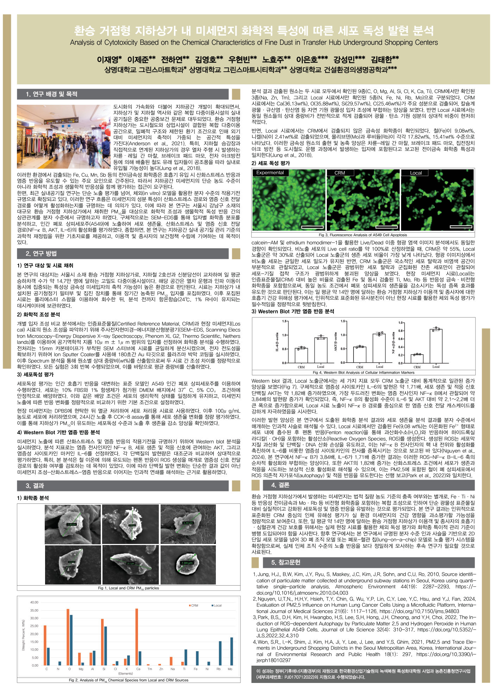

안녕하세요! 상명대학교 그린스마트시티학과에서 인간과 식물, 첨단 환경 기술의 조화를 연구하는 노효주입니다. 데이터 기반의 인사이트(Google Analytics)와 생태 원예학의 융합을 통해 미래 도시의 새로운 가치를 창출합니다.
도시화와 기후 위기 속에서 식물 환경과 스마트 데이터 기술을 융합하여 사람과 자연이 공존하는 공간을 연구합니다.
상명대학교 그린스마트시티학과 재학
"식물이 가진 치유력과 환경 정화 기능을 스마트 시티의 첨단 센서 및 사용자 행동 데이터와 결합할 때, 진정한 지속 가능성이 시작됩니다."
도시 속 식물과 원예가 인간의 심리적·생리적 웰빙 및 도심 미기후 조절에 미치는 긍정적 영향을 심층 분석합니다.
IoT 센서와 스마트 수자원 관리, 수직 정원 및 옥상 녹화를 통한 도심 열섬 현상 완화 솔루션을 탐구합니다.
Google Analytics 자격을 갖추고, 정량적 트렌드 분석과 공간 데이터 인사이트를 도출하여 최적의 환경을 기획합니다.
친환경 스마트 시티 지표를 설계하고 실증적인 도시 생태계 복원 모델을 구축하는 데 기여합니다.
전문 학술대회에서 연구력과 혁신성을 인정받은 대표 수상 성과입니다.
인간과 식물, 환경의 유기적 관계를 과학적으로 증명하고 스마트 도시 환경에 적용 가능한 혁신적인 원예 생태학적 접근법을 제안하여 학회 최고 영예인 최우수상을 수상하였습니다.

2026 인간식물환경학회 춘계학술대회 학술포스터 (환경과 원예 최우수상) · 출처: 인간식물환경학회 춘계학술대회_미세먼지ver1.0.pdf
Google Analytics 공인 자격과 환경-도시 융합 기술 역량을 바탕으로 정량적 인사이트를 도출합니다.
웹/앱 및 공간 디지털 플랫폼의 사용자 행동 분석, 트래픽 유입 경로 추적, 전환 최적화 및 맞춤형 대시보드 리포팅을 위한 Google의 공식 데이터 분석 전문가 인증입니다.
도시 생태 공간 및 스마트 시티 웹 포털 이용자의 체류 시간, 선호 공간 패턴을 데이터로 정량화하여 맞춤형 생태 인프라 기획에 반영합니다.
도시 환경 센서 데이터와 GA 사용자 트래픽을 결합한 실시간 시뮬레이션 인터페이스입니다.
학업 및 학회 수상 성과를 바탕으로 확장해 나가는 미래 지향적 연구 프로젝트입니다.
2026 인간식물환경학회 최우수상 수상작으로, 도심 거주민의 스트레스 완화 및 환경 만족도를 실측 데이터로 분석하여 최적의 식재 디자인 모델을 도출했습니다.
도시 녹지 플랫폼에 Google Analytics 트래킹 기법을 적용하여 시민들의 공원 방문 동선, 체류 시간, 선호 녹지 구역을 시각화하고 유지관리 효율을 증대시켰습니다.
빌딩 외벽 및 도심 가로에 IoT 기반 자동 관수와 식생 모니터링을 결합하여 평균 기온을 2.8°C 이상 저감시키는 스마트 그린 인프라 구축안입니다.
용산구 이촌동 대상지의 i-Tree 분석 결과 불투수면 66.7%, 수목 피복률 8.4%에 그치는 녹지 단절 문제를 진단하고, 도로와 건물로 갈라진 도시와 한강 사이를 다시 잇는 도시숲 생태 네트워크 '용맥(龍脈)'을 제안했습니다. 기후대응 다층 식재, 빗물정원 기반 물순환 회복, 공공기관 협력 운영체계까지 아우르는 조경생태 설계안입니다.
연구 협업, 프로젝트 제안, 학술 교류 등 언제든 편하게 연락 주시기 바랍니다.
새로운 가능성과 친환경 스마트 시티의 내일을 위해 늘 열려 있습니다.